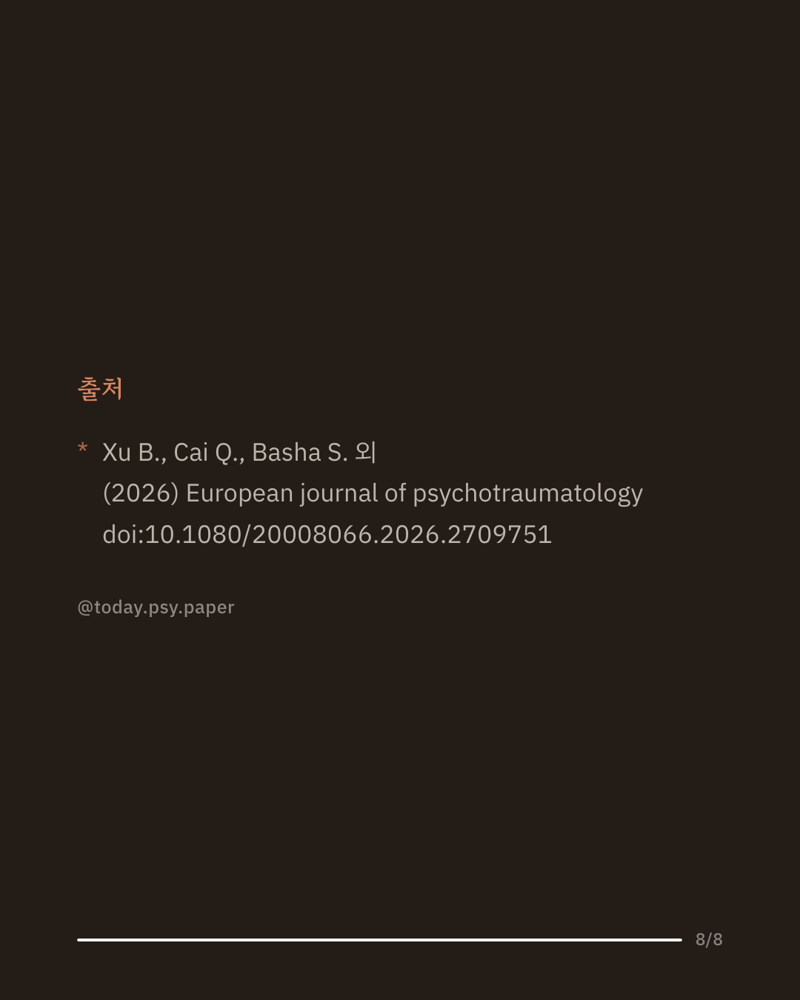

외상 후 스트레스 장애(PTSD)는 전 세계적으로 정신건강 서비스에 부담을 주는 흔하고 심각한 질환입니다. 노출치료(PE)와 인지처리치료(CPT)는 이 질환에 가장 널리 쓰이는 심리치료법으로 꼽힙니다. 이번 메타분석은 163편의 연구, 175개 치료군 자료를 모아 두 치료법의 효과를 비교했습니다. 분석 결과 두 치료법 모두 증상을 크게 줄이는 것으로 나타났습니다(효과크기 g=1.67, 매우 큰 편). 치료법 자체의 차이보다는 성별 비율이나 군인 여부 같은 대상자 특성에 따라 효과가 달라질 가능성이 있었습니다. 이는 어떤 치료를 선택하든 큰 효과를 기대할 수 있다는 의의를 지니지만, 포함된 연구마다 질적 차이가 있고 대상자 특성 정보가 충분히 보고되지 않은 경우도 많았습니다. 단일 연구이므로 확대 해석은 조심해야 합니다. 출처: European Journal of Psychotraumatology (2026), 'Effectiveness and moderators of PE and CPT in adult PTSD treatment: a systematic review and meta-analysis' #임상심리 #심리치료 #외상후스트레스장애 #논문리뷰
python3 publish.py 42712180